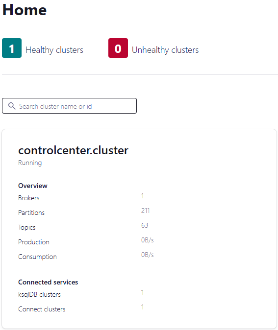
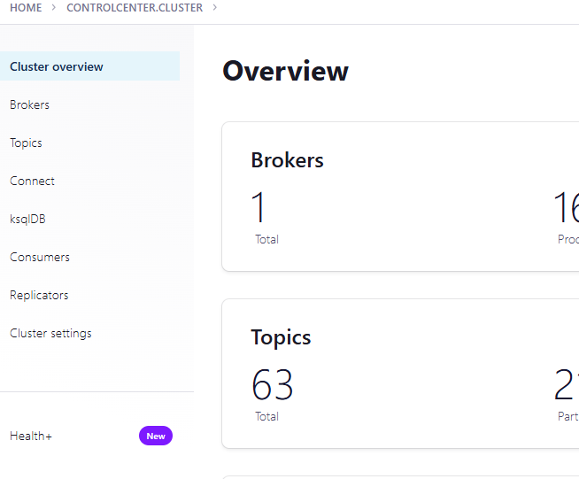
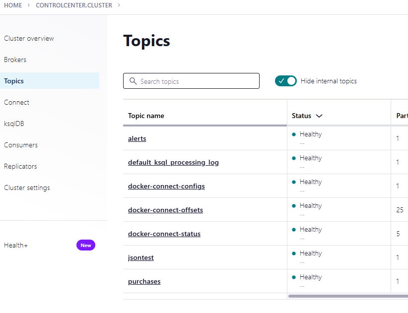
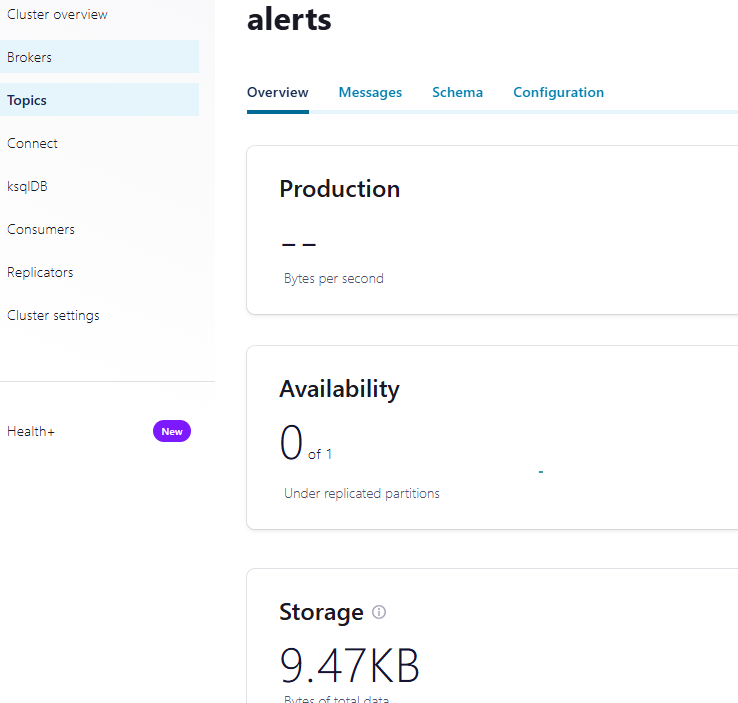
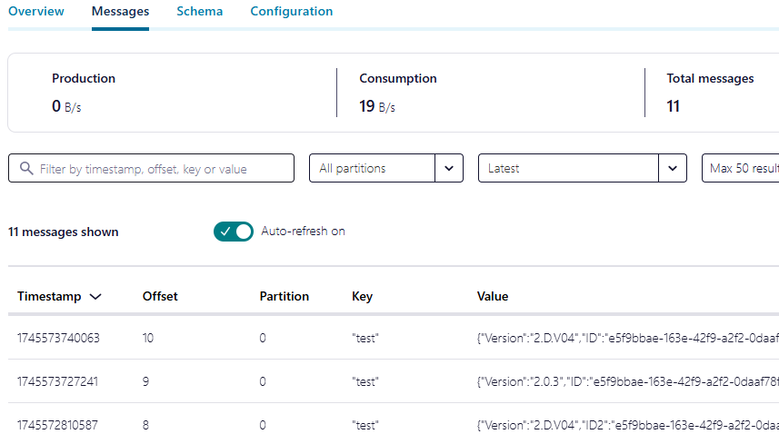

Demonstration¶
To fully demonstrate how alerts are sent to Kafka through the gateway following commands are necessary. The Kafka GitHub project provides docker samples for all their services running out the box. Their sample was taken from here: https://docs.confluent.io/platform/current/get-started/platform-quickstart.html. The docker sample was taken from here: https://github.com/confluentinc/cp-all-in-one/tree/7.9.0-post/cp-all-in-one/docker-compose.yml
The gateways were added to the docker compose file located in the root folder of the project. It can be launched via:
docker-compose up -d rest-proxy control-center schema-registry broker gateway-receiver gateway-sender
After about a minute the system should be launched and the Kafka dashboard can be reached via web browser at
You should see something similar to this: Landing page
Click on controlcenter.cluster

Click on Topics

Click on alerts (if it was already set up correctly). If it is not there yet you can either send the first message via curl or click on the GUI "Add topic" at the top right.

Click on messages to see the current stored messages.

Please note that for Kafke message consumption each message requires a key, in this case it was "test" and the IDMEFv2 alert is stored inside the value filed of the JSON message. It is also possible to specify a JSON schema for the correct format of the messages, but for this demo it is not required. Please note that the Kafka rest proxy cannot process IDMEFv2 alerts directly but requires an envelope using a JSON record array and a key and value object as shown below.
To test whether new messages arrive in Kafka you can use this curl command containing an IDMEFv2 alert or the Bruno collection provided:
curl --location 'http://localhost:8082/topics/alerts' \
--header 'Content-Type: application/vnd.kafka.json.v2+json' \
--data '{
"records": [
{
"key":"test",
"value":
{
"Version": "2.D.V04",
"ID": "e5f9bbae-163e-42f9-a2f2-0daaf78fefb1",
"Status": "Incident",
"OrganisationName": "acme.eu",
"CreateTime": "",
"StartTime": "2021-01-18T23:33:04.52Z",
"Cause": "Malicious",
"Category": [
"Recon.Scanning"
],
"Priority": "Medium",
"Confidence": 0.9,
"Description": "An IDS event of type \"Unknown IP Protocol\" was observed",
"Analyzer": {
"IP": "172.10.5.31",
"Name": "Core router",
"Hostname": "core-router.example.com",
"Type": "Cyber",
"Model": "Cisco 4532",
"Category": [
"NIDS"
],
"Data": [
"Datagram"
],
"Method": [
"signature"
],
"GeoLocation": "+48.75726,+2.299528,+65.1",
"UnLocation": "GR ATH",
"Location": "SBDX1"
},
"Sensor": [
{
"IP": "172.10.5.31",
"Name": "Core router",
"CaptureZone": "[{\"type\":\"ipv4-addr\",\"spec_version\":\"2.1\",\"id\": \"ipv4-addr--ff26c055-6336-5bc5-b98d-13d6226742dd\",\"value\": \"172.17.0.0\"},{\"type\":\"ipv4-net-mask\",\"spec_version\":\"2.1\",\"id\":\"ipv4-net-mask--ff26c055-6336-5bc5-b98d-13d6226742dd\",\"value\":\"255.255.0.0\"}]"
}
],
"Source": [
{
"IP": "77.222.222.115",
"Protocol": [
"Unknown"
]
}
],
"Target": [
{
"IP": "172.20.7.25",
"Port": [
645
],
"Location": "Datacenter SBX1"
}
]
}
}
]
}'
{"offsets":[{"partition":0,"offset":11,"error_code":null,"error":null}],"key_schema_id":null,"value_schema_id":null}
Send the curl command above to the gateway-sender for initializing the complete demo. It will be forwarded to the receiver-gateway and then forwarded to the kafka-rest destination.
curl --location 'http://localhost:10080/topics/alerts' \
--header 'Content-Type: application/vnd.kafka.json.v2+json' \
--data '{
"Version": "2.D.V04",
"ID": "e5f9bbae-163e-42f9-a2f2-0daaf78fefb1",
"Status": "Incident",
"OrganisationName": "acme.eu",
"CreateTime": "",
"StartTime": "2021-01-18T23:33:04.52Z",
"Cause": "Malicious",
"Category": [
"Recon.Scanning"
],
"Priority": "Medium",
"Confidence": 0.9,
"Description": "An IDS event of type \"Unknown IP Protocol\" was observed",
"Analyzer": {
"IP": "172.10.5.31",
"Name": "Core router",
"Hostname": "core-router.example.com",
"Type": "Cyber",
"Model": "Cisco 4532",
"Category": [
"NIDS"
],
"Data": [
"Datagram"
],
"Method": [
"signature"
],
"GeoLocation": "+48.75726,+2.299528,+65.1",
"UnLocation": "GR ATH",
"Location": "SBDX1"
},
"Sensor": [
{
"IP": "172.10.5.31",
"Name": "Core router",
"CaptureZone": "[{\"type\":\"ipv4-addr\",\"spec_version\":\"2.1\",\"id\": \"ipv4-addr--ff26c055-6336-5bc5-b98d-13d6226742dd\",\"value\": \"172.17.0.0\"},{\"type\":\"ipv4-net-mask\",\"spec_version\":\"2.1\",\"id\":\"ipv4-net-mask--ff26c055-6336-5bc5-b98d-13d6226742dd\",\"value\":\"255.255.0.0\"}]"
}
],
"Source": [
{
"IP": "77.222.222.115",
"Protocol": [
"Unknown"
]
}
],
"Target": [
{
"IP": "172.20.7.25",
"Port": [
645
],
"Location": "Datacenter SBX1"
}
]
}'
▶ Click to see expected similar output of gateway-sender:
docker compose up gateway-sender
[+] Running 1/1
✔ Container safe4soc-gateway-gateway-sender-1 Created 0.3s
Attaching to gateway-sender-1
gateway-sender-1 |
gateway-sender-1 | . ____ _ __ _ _
gateway-sender-1 | /\\ / ___'_ __ _ _(_)_ __ __ _ \ \ \ \
gateway-sender-1 | ( ( )\___ | '_ | '_| | '_ \/ _` | \ \ \ \
gateway-sender-1 | \\/ ___)| |_)| | | | | || (_| | ) ) ) )
gateway-sender-1 | ' |____| .__|_| |_|_| |_\__, | / / / /
gateway-sender-1 | =========|_|==============|___/=/_/_/_/
gateway-sender-1 |
gateway-sender-1 | :: Spring Boot :: (v3.3.5)
gateway-sender-1 |
gateway-sender-1 | 2025-05-13T21:08:47.487Z INFO 1 --- [s4s-gateway] [ main] d.f.aisec.s4sgateway.Application : Starting AOT-processed Application using Java 17.0.5 with PID 1 (/s4sgateway started by root in /)
gateway-sender-1 | 2025-05-13T21:08:47.487Z DEBUG 1 --- [s4s-gateway] [ main] d.f.aisec.s4sgateway.Application : Running with Spring Boot v3.3.5, Spring v6.1.14
gateway-sender-1 | 2025-05-13T21:08:47.487Z INFO 1 --- [s4s-gateway] [ main] d.f.aisec.s4sgateway.Application : No active profile set, falling back to 1 default profile: "default"
gateway-sender-1 | 2025-05-13T21:08:47.528Z INFO 1 --- [s4s-gateway] [ main] o.s.b.w.embedded.tomcat.TomcatWebServer : Tomcat initialized with port 10080 (http)
gateway-sender-1 | 2025-05-13T21:08:47.532Z INFO 1 --- [s4s-gateway] [ main] o.apache.catalina.core.StandardService : Starting service [Tomcat]
gateway-sender-1 | 2025-05-13T21:08:47.533Z INFO 1 --- [s4s-gateway] [ main] o.apache.catalina.core.StandardEngine : Starting Servlet engine: [Apache Tomcat/10.1.31]
gateway-sender-1 | 2025-05-13T21:08:47.546Z INFO 1 --- [s4s-gateway] [ main] o.a.c.c.C.[Tomcat].[localhost].[/] : Initializing Spring embedded WebApplicationContext
gateway-sender-1 | 2025-05-13T21:08:47.547Z INFO 1 --- [s4s-gateway] [ main] w.s.c.ServletWebServerApplicationContext : Root WebApplicationContext: initialization completed in 60 ms
gateway-sender-1 | 2025-05-13T21:08:47.610Z INFO 1 --- [s4s-gateway] [ main] o.s.b.w.embedded.tomcat.TomcatWebServer : Tomcat started on port 10080 (http) with context path '/'
gateway-sender-1 | 2025-05-13T21:08:47.613Z INFO 1 --- [s4s-gateway] [ main] d.f.aisec.s4sgateway.Application : Started Application in 0.162 seconds (process running for 0.168)
gateway-sender-1 | 2025-05-13T21:08:47.613Z INFO 1 --- [s4s-gateway] [ main] d.f.aisec.s4sgateway.Controller : Loading Information Sharing Agreement and Filter settings ...
gateway-sender-1 | 2025-05-13T21:08:47.613Z INFO 1 --- [s4s-gateway] [ main] d.f.aisec.s4sgateway.Controller : Loaded this ISA:{"data_usage_policies":{"use_until":"2024-12-12","use_after":"2024-09-12","share_further":"false"},"data_sender_SIEM_version":"Version 0.1","intended_use":"alert_gathering","IDMEFv2_attributes":{"attributes_to_anonymize":[],"attributes_to_neglect":[],"attributes_to_pseudonemize":[],"attributes_to_transmit":[]},"sending_mode":"","encryption_requirements":[],"authentication_requirements":[],"enrichmentConfig":{"CreateTime":"","StartTime":""},"data_sender_SIEM_brand":"Example Company A","connection_requirements":[],"filterConfig":{"CreateTime":"","Cause":"","StartTime":""},"provider_reason":"compliance"}
gateway-sender-1 | 2025-05-13T21:08:47.613Z INFO 1 --- [s4s-gateway] [ main] d.f.aisec.s4sgateway.Controller : Checking given configuration for role=SENDER ...
gateway-sender-1 | 2025-05-13T21:08:47.613Z INFO 1 --- [s4s-gateway] [ main] d.f.aisec.s4sgateway.Controller : Config gatewaySD=gateway-sender:10080
gateway-sender-1 | 2025-05-13T21:08:47.613Z INFO 1 --- [s4s-gateway] [ main] d.f.aisec.s4sgateway.Controller : Config gatewayRC=gateway-receiver:10081
gateway-sender-1 | 2025-05-13T21:08:47.614Z INFO 1 --- [s4s-gateway] [ main] d.f.aisec.s4sgateway.Controller : Config relevantHeaders=[content-type, accept, user-Agent, accept-Encoding, safe4soc-receiver-hostname, safe4soc-receiver-port]
gateway-sender-1 | 2025-05-13T21:12:35.610Z INFO 1 --- [s4s-gateway] [io-10080-exec-2] o.a.c.c.C.[Tomcat].[localhost].[/] : Initializing Spring DispatcherServlet 'dispatcherServlet'
gateway-sender-1 | 2025-05-13T21:12:35.611Z INFO 1 --- [s4s-gateway] [io-10080-exec-2] o.s.web.servlet.DispatcherServlet : Initializing Servlet 'dispatcherServlet'
gateway-sender-1 | 2025-05-13T21:12:35.612Z INFO 1 --- [s4s-gateway] [io-10080-exec-2] o.s.web.servlet.DispatcherServlet : Completed initialization in 1 ms
gateway-sender-1 | 2025-05-13T21:12:35.614Z DEBUG 1 --- [s4s-gateway] [io-10080-exec-2] d.f.aisec.s4sgateway.Controller : Header:content-type Key:application/vnd.kafka.json.v2+json
gateway-sender-1 | 2025-05-13T21:12:35.614Z DEBUG 1 --- [s4s-gateway] [io-10080-exec-2] d.f.aisec.s4sgateway.Controller : Header:user-agent Key:PostmanRuntime/7.43.4
gateway-sender-1 | 2025-05-13T21:12:35.614Z DEBUG 1 --- [s4s-gateway] [io-10080-exec-2] d.f.aisec.s4sgateway.Controller : Header:accept Key:*/*
gateway-sender-1 | 2025-05-13T21:12:35.614Z DEBUG 1 --- [s4s-gateway] [io-10080-exec-2] d.f.aisec.s4sgateway.Controller : Header:postman-token Key:b72ab1b5-38d0-4aa6-a481-bb77ce184cb7
gateway-sender-1 | 2025-05-13T21:12:35.614Z DEBUG 1 --- [s4s-gateway] [io-10080-exec-2] d.f.aisec.s4sgateway.Controller : Header:host Key:localhost:10080
gateway-sender-1 | 2025-05-13T21:12:35.614Z DEBUG 1 --- [s4s-gateway] [io-10080-exec-2] d.f.aisec.s4sgateway.Controller : Header:accept-encoding Key:gzip, deflate, br
gateway-sender-1 | 2025-05-13T21:12:35.614Z DEBUG 1 --- [s4s-gateway] [io-10080-exec-2] d.f.aisec.s4sgateway.Controller : Header:connection Key:keep-alive
gateway-sender-1 | 2025-05-13T21:12:35.614Z DEBUG 1 --- [s4s-gateway] [io-10080-exec-2] d.f.aisec.s4sgateway.Controller : Header:content-length Key:1449
gateway-sender-1 | 2025-05-13T21:12:35.614Z DEBUG 1 --- [s4s-gateway] [io-10080-exec-2] d.f.aisec.s4sgateway.Controller : RequestURI /topics/alerts
gateway-sender-1 | 2025-05-13T21:12:35.614Z DEBUG 1 --- [s4s-gateway] [io-10080-exec-2] d.f.aisec.s4sgateway.Controller : RemotePort 36556
gateway-sender-1 | 2025-05-13T21:12:35.615Z DEBUG 1 --- [s4s-gateway] [io-10080-exec-2] d.f.aisec.s4sgateway.Controller : LocalPort 10080
gateway-sender-1 | 2025-05-13T21:12:35.615Z DEBUG 1 --- [s4s-gateway] [io-10080-exec-2] d.f.aisec.s4sgateway.Controller : ServerPort 10080
gateway-sender-1 | 2025-05-13T21:12:35.615Z DEBUG 1 --- [s4s-gateway] [io-10080-exec-2] d.f.aisec.s4sgateway.Controller : ServerName localhost
gateway-sender-1 | 2025-05-13T21:12:35.615Z DEBUG 1 --- [s4s-gateway] [io-10080-exec-2] d.f.aisec.s4sgateway.Controller : Body
gateway-sender-1 | {
gateway-sender-1 | "Version": "2.D.V04",
gateway-sender-1 | "ID": "e5f9bbae-163e-42f9-a2f2-0daaf78fefb1",
gateway-sender-1 | "Status": "Incident",
gateway-sender-1 | "OrganisationName": "acme.eu",
gateway-sender-1 | "CreateTime": "",
gateway-sender-1 | "StartTime": "2021-01-18T23:33:04.52Z",
gateway-sender-1 | "Cause": "Malicious",
gateway-sender-1 | "Category": [
gateway-sender-1 | "Recon.Scanning"
gateway-sender-1 | ],
gateway-sender-1 | "Priority": "Medium",
gateway-sender-1 | "Confidence": 0.9,
gateway-sender-1 | "Description": "An IDS event of type \"Unknown IP Protocol\" was observed",
gateway-sender-1 | "Analyzer": {
gateway-sender-1 | "IP": "172.10.5.31",
gateway-sender-1 | "Name": "Core router",
gateway-sender-1 | "Hostname": "core-router.example.com",
gateway-sender-1 | "Type": "Cyber",
gateway-sender-1 | "Model": "Cisco 4532",
gateway-sender-1 | "Category": [
gateway-sender-1 | "NIDS"
gateway-sender-1 | ],
gateway-sender-1 | "Data": [
gateway-sender-1 | "Datagram"
gateway-sender-1 | ],
gateway-sender-1 | "Method": [
gateway-sender-1 | "signature"
gateway-sender-1 | ],
gateway-sender-1 | "GeoLocation": "+48.75726,+2.299528,+65.1",
gateway-sender-1 | "UnLocation": "GR ATH",
gateway-sender-1 | "Location": "SBDX1"
gateway-sender-1 | },
gateway-sender-1 | "Sensor": [
gateway-sender-1 | {
gateway-sender-1 | "IP": "172.10.5.31",
gateway-sender-1 | "Name": "Core router",
gateway-sender-1 | "CaptureZone": "[{\"type\":\"ipv4-addr\",\"spec_version\":\"2.1\",\"id\": \"ipv4-addr--ff26c055-6336-5bc5-b98d-13d6226742dd\",\"value\": \"172.17.0.0\"},{\"type\":\"ipv4-net-mask\",\"spec_version\":\"2.1\",\"id\":\"ipv4-net-mask--ff26c055-6336-5bc5-b98d-13d6226742dd\",\"value\":\"255.255.0.0\"}]"
gateway-sender-1 | }
gateway-sender-1 | ],
gateway-sender-1 | "Source": [
gateway-sender-1 | {
gateway-sender-1 | "IP": "77.222.222.115",
gateway-sender-1 | "Protocol": [
gateway-sender-1 | "Unknown"
gateway-sender-1 | ]
gateway-sender-1 | }
gateway-sender-1 | ],
gateway-sender-1 | "Target": [
gateway-sender-1 | {
gateway-sender-1 | "IP": "172.20.7.25",
gateway-sender-1 | "Port": [
gateway-sender-1 | 645
gateway-sender-1 | ],
gateway-sender-1 | "Location": "Datacenter SBX1"
gateway-sender-1 | }
gateway-sender-1 | ]
gateway-sender-1 | }
gateway-sender-1 | 2025-05-13T21:12:35.615Z DEBUG 1 --- [s4s-gateway] [io-10080-exec-2] d.f.aisec.s4sgateway.Controller : Filtering the key CreateTime
gateway-sender-1 | 2025-05-13T21:12:35.615Z DEBUG 1 --- [s4s-gateway] [io-10080-exec-2] d.f.aisec.s4sgateway.Controller : Filtering the key Cause
gateway-sender-1 | 2025-05-13T21:12:35.615Z DEBUG 1 --- [s4s-gateway] [io-10080-exec-2] d.f.aisec.s4sgateway.Controller : Filtering the key StartTime
gateway-sender-1 | 2025-05-13T21:12:35.615Z DEBUG 1 --- [s4s-gateway] [io-10080-exec-2] d.f.aisec.s4sgateway.Controller : Body after Filtering:
gateway-sender-1 | {
gateway-sender-1 | "Status": "Incident",
gateway-sender-1 | "Category": ["Recon.Scanning"],
gateway-sender-1 | "Description": "An IDS event of type \"Unknown IP Protocol\" was observed",
gateway-sender-1 | "Priority": "Medium",
gateway-sender-1 | "CreateTime": "",
gateway-sender-1 | "StartTime": "",
gateway-sender-1 | "Analyzer": {
gateway-sender-1 | "Type": "Cyber",
gateway-sender-1 | "Category": ["NIDS"],
gateway-sender-1 | "IP": "172.10.5.31",
gateway-sender-1 | "Hostname": "core-router.example.com",
gateway-sender-1 | "Model": "Cisco 4532",
gateway-sender-1 | "Data": ["Datagram"],
gateway-sender-1 | "UnLocation": "GR ATH",
gateway-sender-1 | "Method": ["signature"],
gateway-sender-1 | "GeoLocation": "+48.75726,+2.299528,+65.1",
gateway-sender-1 | "Name": "Core router",
gateway-sender-1 | "Location": "SBDX1"
gateway-sender-1 | },
gateway-sender-1 | "Source": [{
gateway-sender-1 | "IP": "77.222.222.115",
gateway-sender-1 | "Protocol": ["Unknown"]
gateway-sender-1 | }],
gateway-sender-1 | "Target": [{
gateway-sender-1 | "IP": "172.20.7.25",
gateway-sender-1 | "Port": [645],
gateway-sender-1 | "Location": "Datacenter SBX1"
gateway-sender-1 | }],
gateway-sender-1 | "Version": "2.D.V04",
gateway-sender-1 | "Confidence": 0.9,
gateway-sender-1 | "Cause": "",
gateway-sender-1 | "OrganisationName": "acme.eu",
gateway-sender-1 | "ID": "e5f9bbae-163e-42f9-a2f2-0daaf78fefb1",
gateway-sender-1 | "Sensor": [{
gateway-sender-1 | "CaptureZone": "[{\"type\":\"ipv4-addr\",\"spec_version\":\"2.1\",\"id\": \"ipv4-addr--ff26c055-6336-5bc5-b98d-13d6226742dd\",\"value\": \"172.17.0.0\"},{\"type\":\"ipv4-net-mask\",\"spec_version\":\"2.1\",\"id\":\"ipv4-net-mask--ff26c055-6336-5bc5-b98d-13d6226742dd\",\"value\":\"255.255.0.0\"}]",
gateway-sender-1 | "IP": "172.10.5.31",
gateway-sender-1 | "Name": "Core router"
gateway-sender-1 | }]
gateway-sender-1 | }
gateway-sender-1 | 2025-05-13T21:12:35.615Z DEBUG 1 --- [s4s-gateway] [io-10080-exec-2] d.f.aisec.s4sgateway.Controller : Enriching the key CreateTime
gateway-sender-1 | 2025-05-13T21:12:35.615Z DEBUG 1 --- [s4s-gateway] [io-10080-exec-2] d.f.aisec.s4sgateway.Controller : Enriching the key StartTime
gateway-sender-1 | 2025-05-13T21:12:35.615Z DEBUG 1 --- [s4s-gateway] [io-10080-exec-2] d.f.aisec.s4sgateway.Controller : Body after Enrichment:
gateway-sender-1 | {
gateway-sender-1 | "Status": "Incident",
gateway-sender-1 | "Category": ["Recon.Scanning"],
gateway-sender-1 | "Description": "An IDS event of type \"Unknown IP Protocol\" was observed",
gateway-sender-1 | "Priority": "Medium",
gateway-sender-1 | "CreateTime": "2025-05-13T21:12:35.61Z",
gateway-sender-1 | "StartTime": "2025-05-13T21:12:35.61Z",
gateway-sender-1 | "Analyzer": {
gateway-sender-1 | "Type": "Cyber",
gateway-sender-1 | "Category": ["NIDS"],
gateway-sender-1 | "IP": "172.10.5.31",
gateway-sender-1 | "Hostname": "core-router.example.com",
gateway-sender-1 | "Model": "Cisco 4532",
gateway-sender-1 | "Data": ["Datagram"],
gateway-sender-1 | "UnLocation": "GR ATH",
gateway-sender-1 | "Method": ["signature"],
gateway-sender-1 | "GeoLocation": "+48.75726,+2.299528,+65.1",
gateway-sender-1 | "Name": "Core router",
gateway-sender-1 | "Location": "SBDX1"
gateway-sender-1 | },
gateway-sender-1 | "Source": [{
gateway-sender-1 | "IP": "77.222.222.115",
gateway-sender-1 | "Protocol": ["Unknown"]
gateway-sender-1 | }],
gateway-sender-1 | "Target": [{
gateway-sender-1 | "IP": "172.20.7.25",
gateway-sender-1 | "Port": [645],
gateway-sender-1 | "Location": "Datacenter SBX1"
gateway-sender-1 | }],
gateway-sender-1 | "Version": "2.D.V04",
gateway-sender-1 | "Confidence": 0.9,
gateway-sender-1 | "Cause": "",
gateway-sender-1 | "OrganisationName": "acme.eu",
gateway-sender-1 | "ID": "e5f9bbae-163e-42f9-a2f2-0daaf78fefb1",
gateway-sender-1 | "Sensor": [{
gateway-sender-1 | "CaptureZone": "[{\"type\":\"ipv4-addr\",\"spec_version\":\"2.1\",\"id\": \"ipv4-addr--ff26c055-6336-5bc5-b98d-13d6226742dd\",\"value\": \"172.17.0.0\"},{\"type\":\"ipv4-net-mask\",\"spec_version\":\"2.1\",\"id\":\"ipv4-net-mask--ff26c055-6336-5bc5-b98d-13d6226742dd\",\"value\":\"255.255.0.0\"}]",
gateway-sender-1 | "IP": "172.10.5.31",
gateway-sender-1 | "Name": "Core router"
gateway-sender-1 | }]
gateway-sender-1 | }
gateway-sender-1 | 2025-05-13T21:12:35.616Z DEBUG 1 --- [s4s-gateway] [io-10080-exec-2] d.f.aisec.s4sgateway.Controller : Printing headers for forward request
gateway-sender-1 | 2025-05-13T21:12:35.616Z DEBUG 1 --- [s4s-gateway] [io-10080-exec-2] d.f.aisec.s4sgateway.Controller : application/vnd.kafka.json.v2+json
gateway-sender-1 | 2025-05-13T21:12:35.616Z DEBUG 1 --- [s4s-gateway] [io-10080-exec-2] d.f.aisec.s4sgateway.Controller : */*
gateway-sender-1 | 2025-05-13T21:12:35.616Z DEBUG 1 --- [s4s-gateway] [io-10080-exec-2] d.f.aisec.s4sgateway.Controller : Printing forwarded request info: http://gateway-receiver:10081/topics/alerts POST
gateway-sender-1 | 2025-05-13T21:12:35.616Z DEBUG 1 --- [s4s-gateway] [io-10080-exec-2] d.f.aisec.s4sgateway.Controller : Printing forwarded body: {"Status":"Incident","Category":["Recon.Scanning"],"Description":"An IDS event of type \"Unknown IP Protocol\" was observed","Priority":"Medium","CreateTime":"2025-05-13T21:12:35.61Z","StartTime":"2025-05-13T21:12:35.61Z","Analyzer":{"Type":"Cyber","Category":["NIDS"],"IP":"172.10.5.31","Hostname":"core-router.example.com","Model":"Cisco 4532","Data":["Datagram"],"UnLocation":"GR ATH","Method":["signature"],"GeoLocation":"+48.75726,+2.299528,+65.1","Name":"Core router","Location":"SBDX1"},"Source":[{"IP":"77.222.222.115","Protocol":["Unknown"]}],"Target":[{"IP":"172.20.7.25","Port":[645],"Location":"Datacenter SBX1"}],"Version":"2.D.V04","Confidence":0.9,"Cause":"","OrganisationName":"acme.eu","ID":"e5f9bbae-163e-42f9-a2f2-0daaf78fefb1","Sensor":[{"CaptureZone":"[{\"type\":\"ipv4-addr\",\"spec_version\":\"2.1\",\"id\": \"ipv4-addr--ff26c055-6336-5bc5-b98d-13d6226742dd\",\"value\": \"172.17.0.0\"},{\"type\":\"ipv4-net-mask\",\"spec_version\":\"2.1\",\"id\":\"ipv4-net-mask--ff26c055-6336-5bc5-b98d-13d6226742dd\",\"value\":\"255.255.0.0\"}]","IP":"172.10.5.31","Name":"Core router"}]}
gateway-sender-1 | 2025-05-13T21:12:35.685Z DEBUG 1 --- [s4s-gateway] [io-10080-exec-2] d.f.aisec.s4sgateway.Controller : Response status code: 200
gateway-sender-1 | 2025-05-13T21:12:35.685Z DEBUG 1 --- [s4s-gateway] [io-10080-exec-2] d.f.aisec.s4sgateway.Controller : Response body: {"offsets":[{"partition":0,"offset":9,"error_code":null,"error":null}],"key_schema_id":null,"value_schema_id":null}
▶ Click to see expected similar output of gateway-receiver:
docker compose up gateway-receiver
[+] Running 1/1
✔ Container safe4soc-gateway-gateway-receiver-1 Created 0.2s
Attaching to gateway-receiver-1
gateway-receiver-1 |
gateway-receiver-1 | . ____ _ __ _ _
gateway-receiver-1 | /\\ / ___'_ __ _ _(_)_ __ __ _ \ \ \ \
gateway-receiver-1 | ( ( )\___ | '_ | '_| | '_ \/ _` | \ \ \ \
gateway-receiver-1 | \\/ ___)| |_)| | | | | || (_| | ) ) ) )
gateway-receiver-1 | ' |____| .__|_| |_|_| |_\__, | / / / /
gateway-receiver-1 | =========|_|==============|___/=/_/_/_/
gateway-receiver-1 |
gateway-receiver-1 | :: Spring Boot :: (v3.3.5)
gateway-receiver-1 |
gateway-receiver-1 | 2025-05-13T21:09:05.971Z INFO 1 --- [s4s-gateway] [ main] d.f.aisec.s4sgateway.Application : Starting AOT-processed Application using Java 17.0.5 with PID 1 (/s4sgateway started by root in /)
gateway-receiver-1 | 2025-05-13T21:09:05.971Z DEBUG 1 --- [s4s-gateway] [ main] d.f.aisec.s4sgateway.Application : Running with Spring Boot v3.3.5, Spring v6.1.14
gateway-receiver-1 | 2025-05-13T21:09:05.972Z INFO 1 --- [s4s-gateway] [ main] d.f.aisec.s4sgateway.Application : No active profile set, falling back to 1 default profile: "default"
gateway-receiver-1 | 2025-05-13T21:09:05.995Z INFO 1 --- [s4s-gateway] [ main] o.s.b.w.embedded.tomcat.TomcatWebServer : Tomcat initialized with port 10081 (http)
gateway-receiver-1 | 2025-05-13T21:09:05.996Z INFO 1 --- [s4s-gateway] [ main] o.apache.catalina.core.StandardService : Starting service [Tomcat]
gateway-receiver-1 | 2025-05-13T21:09:05.996Z INFO 1 --- [s4s-gateway] [ main] o.apache.catalina.core.StandardEngine : Starting Servlet engine: [Apache Tomcat/10.1.31]
gateway-receiver-1 | 2025-05-13T21:09:06.005Z INFO 1 --- [s4s-gateway] [ main] o.a.c.c.C.[Tomcat].[localhost].[/] : Initializing Spring embedded WebApplicationContext
gateway-receiver-1 | 2025-05-13T21:09:06.005Z INFO 1 --- [s4s-gateway] [ main] w.s.c.ServletWebServerApplicationContext : Root WebApplicationContext: initialization completed in 33 ms
gateway-receiver-1 | 2025-05-13T21:09:06.034Z INFO 1 --- [s4s-gateway] [ main] o.s.b.w.embedded.tomcat.TomcatWebServer : Tomcat started on port 10081 (http) with context path '/'
gateway-receiver-1 | 2025-05-13T21:09:06.035Z INFO 1 --- [s4s-gateway] [ main] d.f.aisec.s4sgateway.Application : Started Application in 0.084 seconds (process running for 0.087)
gateway-receiver-1 | 2025-05-13T21:09:06.036Z INFO 1 --- [s4s-gateway] [ main] d.f.aisec.s4sgateway.Controller : Loading Information Sharing Agreement and Filter settings ...
gateway-receiver-1 | 2025-05-13T21:09:06.036Z INFO 1 --- [s4s-gateway] [ main] d.f.aisec.s4sgateway.Controller : Loaded this ISA:{"data_usage_policies":{"use_until":"2024-12-12","use_after":"2024-09-12","share_further":"false"},"data_sender_SIEM_version":"Version 0.1","intended_use":"alert_gathering","IDMEFv2_attributes":{"attributes_to_anonymize":[],"attributes_to_neglect":[],"attributes_to_pseudonemize":[],"attributes_to_transmit":[]},"sending_mode":"","encryption_requirements":[],"authentication_requirements":[],"enrichmentConfig":{"CreateTime":"","StartTime":""},"data_sender_SIEM_brand":"Example Company A","connection_requirements":[],"filterConfig":{"CreateTime":"","Cause":"","StartTime":""},"provider_reason":"compliance"}
gateway-receiver-1 | 2025-05-13T21:09:06.036Z INFO 1 --- [s4s-gateway] [ main] d.f.aisec.s4sgateway.Controller : Checking given configuration for role=RECEIVER ...
gateway-receiver-1 | 2025-05-13T21:09:06.037Z INFO 1 --- [s4s-gateway] [ main] d.f.aisec.s4sgateway.Controller : Config gatewayRC=gateway-receiver:10081
gateway-receiver-1 | 2025-05-13T21:09:06.037Z INFO 1 --- [s4s-gateway] [ main] d.f.aisec.s4sgateway.Controller : Config kafkaLocal=rest-proxy:8082
gateway-receiver-1 | 2025-05-13T21:09:06.037Z INFO 1 --- [s4s-gateway] [ main] d.f.aisec.s4sgateway.Controller : Config relevantHeaders=[content-type, accept, user-Agent, accept-Encoding, safe4soc-receiver-hostname, safe4soc-receiver-port]
gateway-receiver-1 | 2025-05-13T21:12:35.624Z INFO 1 --- [s4s-gateway] [io-10081-exec-1] o.a.c.c.C.[Tomcat].[localhost].[/] : Initializing Spring DispatcherServlet 'dispatcherServlet'
gateway-receiver-1 | 2025-05-13T21:12:35.624Z INFO 1 --- [s4s-gateway] [io-10081-exec-1] o.s.web.servlet.DispatcherServlet : Initializing Servlet 'dispatcherServlet'
gateway-receiver-1 | 2025-05-13T21:12:35.625Z INFO 1 --- [s4s-gateway] [io-10081-exec-1] o.s.web.servlet.DispatcherServlet : Completed initialization in 1 ms
gateway-receiver-1 | 2025-05-13T21:12:35.626Z DEBUG 1 --- [s4s-gateway] [io-10081-exec-1] d.f.aisec.s4sgateway.Controller : Header:connection Key:Upgrade, HTTP2-Settings
gateway-receiver-1 | 2025-05-13T21:12:35.626Z DEBUG 1 --- [s4s-gateway] [io-10081-exec-1] d.f.aisec.s4sgateway.Controller : Header:content-length Key:1097
gateway-receiver-1 | 2025-05-13T21:12:35.626Z DEBUG 1 --- [s4s-gateway] [io-10081-exec-1] d.f.aisec.s4sgateway.Controller : Header:host Key:gateway-receiver:10081
gateway-receiver-1 | 2025-05-13T21:12:35.626Z DEBUG 1 --- [s4s-gateway] [io-10081-exec-1] d.f.aisec.s4sgateway.Controller : Header:http2-settings Key:AAEAAEAAAAIAAAABAAMAAABkAAQBAAAAAAUAAEAA
gateway-receiver-1 | 2025-05-13T21:12:35.627Z DEBUG 1 --- [s4s-gateway] [io-10081-exec-1] d.f.aisec.s4sgateway.Controller : Header:upgrade Key:h2c
gateway-receiver-1 | 2025-05-13T21:12:35.627Z DEBUG 1 --- [s4s-gateway] [io-10081-exec-1] d.f.aisec.s4sgateway.Controller : Header:user-agent Key:Java-http-client/17.0.5
gateway-receiver-1 | 2025-05-13T21:12:35.627Z DEBUG 1 --- [s4s-gateway] [io-10081-exec-1] d.f.aisec.s4sgateway.Controller : Header:accept Key:*/*
gateway-receiver-1 | 2025-05-13T21:12:35.627Z DEBUG 1 --- [s4s-gateway] [io-10081-exec-1] d.f.aisec.s4sgateway.Controller : Header:content-type Key:application/vnd.kafka.json.v2+json
gateway-receiver-1 | 2025-05-13T21:12:35.627Z DEBUG 1 --- [s4s-gateway] [io-10081-exec-1] d.f.aisec.s4sgateway.Controller : Header:safe4soc-sender-hostname Key:gateway-sender
gateway-receiver-1 | 2025-05-13T21:12:35.627Z DEBUG 1 --- [s4s-gateway] [io-10081-exec-1] d.f.aisec.s4sgateway.Controller : Header:safe4soc-sender-port Key:10080
gateway-receiver-1 | 2025-05-13T21:12:35.627Z DEBUG 1 --- [s4s-gateway] [io-10081-exec-1] d.f.aisec.s4sgateway.Controller : RequestURI /topics/alerts
gateway-receiver-1 | 2025-05-13T21:12:35.627Z DEBUG 1 --- [s4s-gateway] [io-10081-exec-1] d.f.aisec.s4sgateway.Controller : RemotePort 49610
gateway-receiver-1 | 2025-05-13T21:12:35.628Z DEBUG 1 --- [s4s-gateway] [io-10081-exec-1] d.f.aisec.s4sgateway.Controller : LocalPort 10081
gateway-receiver-1 | 2025-05-13T21:12:35.628Z DEBUG 1 --- [s4s-gateway] [io-10081-exec-1] d.f.aisec.s4sgateway.Controller : ServerPort 10081
gateway-receiver-1 | 2025-05-13T21:12:35.628Z DEBUG 1 --- [s4s-gateway] [io-10081-exec-1] d.f.aisec.s4sgateway.Controller : ServerName gateway-receiver
gateway-receiver-1 | 2025-05-13T21:12:35.628Z DEBUG 1 --- [s4s-gateway] [io-10081-exec-1] d.f.aisec.s4sgateway.Controller : Body
gateway-receiver-1 | {"Status":"Incident","Category":["Recon.Scanning"],"Description":"An IDS event of type \"Unknown IP Protocol\" was observed","Priority":"Medium","CreateTime":"2025-05-13T21:12:35.61Z","StartTime":"2025-05-13T21:12:35.61Z","Analyzer":{"Type":"Cyber","Category":["NIDS"],"IP":"172.10.5.31","Hostname":"core-router.example.com","Model":"Cisco 4532","Data":["Datagram"],"UnLocation":"GR ATH","Method":["signature"],"GeoLocation":"+48.75726,+2.299528,+65.1","Name":"Core router","Location":"SBDX1"},"Source":[{"IP":"77.222.222.115","Protocol":["Unknown"]}],"Target":[{"IP":"172.20.7.25","Port":[645],"Location":"Datacenter SBX1"}],"Version":"2.D.V04","Confidence":0.9,"Cause":"","OrganisationName":"acme.eu","ID":"e5f9bbae-163e-42f9-a2f2-0daaf78fefb1","Sensor":[{"CaptureZone":"[{\"type\":\"ipv4-addr\",\"spec_version\":\"2.1\",\"id\": \"ipv4-addr--ff26c055-6336-5bc5-b98d-13d6226742dd\",\"value\": \"172.17.0.0\"},{\"type\":\"ipv4-net-mask\",\"spec_version\":\"2.1\",\"id\":\"ipv4-net-mask--ff26c055-6336-5bc5-b98d-13d6226742dd\",\"value\":\"255.255.0.0\"}]","IP":"172.10.5.31","Name":"Core router"}]}
gateway-receiver-1 | 2025-05-13T21:12:35.628Z DEBUG 1 --- [s4s-gateway] [io-10081-exec-1] d.f.aisec.s4sgateway.Controller : Filtering the key CreateTime
gateway-receiver-1 | 2025-05-13T21:12:35.628Z DEBUG 1 --- [s4s-gateway] [io-10081-exec-1] d.f.aisec.s4sgateway.Controller : Filtering the key Cause
gateway-receiver-1 | 2025-05-13T21:12:35.628Z DEBUG 1 --- [s4s-gateway] [io-10081-exec-1] d.f.aisec.s4sgateway.Controller : Filtering the key StartTime
gateway-receiver-1 | 2025-05-13T21:12:35.628Z DEBUG 1 --- [s4s-gateway] [io-10081-exec-1] d.f.aisec.s4sgateway.Controller : Body after Filtering:
gateway-receiver-1 | {
gateway-receiver-1 | "Status": "Incident",
gateway-receiver-1 | "Category": ["Recon.Scanning"],
gateway-receiver-1 | "Description": "An IDS event of type \"Unknown IP Protocol\" was observed",
gateway-receiver-1 | "Priority": "Medium",
gateway-receiver-1 | "CreateTime": "",
gateway-receiver-1 | "StartTime": "",
gateway-receiver-1 | "Analyzer": {
gateway-receiver-1 | "Type": "Cyber",
gateway-receiver-1 | "Category": ["NIDS"],
gateway-receiver-1 | "IP": "172.10.5.31",
gateway-receiver-1 | "Hostname": "core-router.example.com",
gateway-receiver-1 | "Model": "Cisco 4532",
gateway-receiver-1 | "Data": ["Datagram"],
gateway-receiver-1 | "UnLocation": "GR ATH",
gateway-receiver-1 | "Method": ["signature"],
gateway-receiver-1 | "GeoLocation": "+48.75726,+2.299528,+65.1",
gateway-receiver-1 | "Name": "Core router",
gateway-receiver-1 | "Location": "SBDX1"
gateway-receiver-1 | },
gateway-receiver-1 | "Source": [{
gateway-receiver-1 | "IP": "77.222.222.115",
gateway-receiver-1 | "Protocol": ["Unknown"]
gateway-receiver-1 | }],
gateway-receiver-1 | "Target": [{
gateway-receiver-1 | "IP": "172.20.7.25",
gateway-receiver-1 | "Port": [645],
gateway-receiver-1 | "Location": "Datacenter SBX1"
gateway-receiver-1 | }],
gateway-receiver-1 | "Version": "2.D.V04",
gateway-receiver-1 | "Confidence": 0.9,
gateway-receiver-1 | "Cause": "",
gateway-receiver-1 | "OrganisationName": "acme.eu",
gateway-receiver-1 | "ID": "e5f9bbae-163e-42f9-a2f2-0daaf78fefb1",
gateway-receiver-1 | "Sensor": [{
gateway-receiver-1 | "CaptureZone": "[{\"type\":\"ipv4-addr\",\"spec_version\":\"2.1\",\"id\": \"ipv4-addr--ff26c055-6336-5bc5-b98d-13d6226742dd\",\"value\": \"172.17.0.0\"},{\"type\":\"ipv4-net-mask\",\"spec_version\":\"2.1\",\"id\":\"ipv4-net-mask--ff26c055-6336-5bc5-b98d-13d6226742dd\",\"value\":\"255.255.0.0\"}]",
gateway-receiver-1 | "IP": "172.10.5.31",
gateway-receiver-1 | "Name": "Core router"
gateway-receiver-1 | }]
gateway-receiver-1 | }
gateway-receiver-1 | 2025-05-13T21:12:35.628Z DEBUG 1 --- [s4s-gateway] [io-10081-exec-1] d.f.aisec.s4sgateway.Controller : Enriching the key CreateTime
gateway-receiver-1 | 2025-05-13T21:12:35.628Z DEBUG 1 --- [s4s-gateway] [io-10081-exec-1] d.f.aisec.s4sgateway.Controller : Enriching the key StartTime
gateway-receiver-1 | 2025-05-13T21:12:35.628Z DEBUG 1 --- [s4s-gateway] [io-10081-exec-1] d.f.aisec.s4sgateway.Controller : Body after Enrichment:
gateway-receiver-1 | {
gateway-receiver-1 | "Status": "Incident",
gateway-receiver-1 | "Category": ["Recon.Scanning"],
gateway-receiver-1 | "Description": "An IDS event of type \"Unknown IP Protocol\" was observed",
gateway-receiver-1 | "Priority": "Medium",
gateway-receiver-1 | "CreateTime": "2025-05-13T21:12:35.62Z",
gateway-receiver-1 | "StartTime": "2025-05-13T21:12:35.62Z",
gateway-receiver-1 | "Analyzer": {
gateway-receiver-1 | "Type": "Cyber",
gateway-receiver-1 | "Category": ["NIDS"],
gateway-receiver-1 | "IP": "172.10.5.31",
gateway-receiver-1 | "Hostname": "core-router.example.com",
gateway-receiver-1 | "Model": "Cisco 4532",
gateway-receiver-1 | "Data": ["Datagram"],
gateway-receiver-1 | "UnLocation": "GR ATH",
gateway-receiver-1 | "Method": ["signature"],
gateway-receiver-1 | "GeoLocation": "+48.75726,+2.299528,+65.1",
gateway-receiver-1 | "Name": "Core router",
gateway-receiver-1 | "Location": "SBDX1"
gateway-receiver-1 | },
gateway-receiver-1 | "Source": [{
gateway-receiver-1 | "IP": "77.222.222.115",
gateway-receiver-1 | "Protocol": ["Unknown"]
gateway-receiver-1 | }],
gateway-receiver-1 | "Target": [{
gateway-receiver-1 | "IP": "172.20.7.25",
gateway-receiver-1 | "Port": [645],
gateway-receiver-1 | "Location": "Datacenter SBX1"
gateway-receiver-1 | }],
gateway-receiver-1 | "Version": "2.D.V04",
gateway-receiver-1 | "Confidence": 0.9,
gateway-receiver-1 | "Cause": "",
gateway-receiver-1 | "OrganisationName": "acme.eu",
gateway-receiver-1 | "ID": "e5f9bbae-163e-42f9-a2f2-0daaf78fefb1",
gateway-receiver-1 | "Sensor": [{
gateway-receiver-1 | "CaptureZone": "[{\"type\":\"ipv4-addr\",\"spec_version\":\"2.1\",\"id\": \"ipv4-addr--ff26c055-6336-5bc5-b98d-13d6226742dd\",\"value\": \"172.17.0.0\"},{\"type\":\"ipv4-net-mask\",\"spec_version\":\"2.1\",\"id\":\"ipv4-net-mask--ff26c055-6336-5bc5-b98d-13d6226742dd\",\"value\":\"255.255.0.0\"}]",
gateway-receiver-1 | "IP": "172.10.5.31",
gateway-receiver-1 | "Name": "Core router"
gateway-receiver-1 | }]
gateway-receiver-1 | }
gateway-receiver-1 | 2025-05-13T21:12:35.628Z DEBUG 1 --- [s4s-gateway] [io-10081-exec-1] d.f.aisec.s4sgateway.Controller : Putting message alert in Kafka Proxy envelope.
gateway-receiver-1 | 2025-05-13T21:12:35.629Z DEBUG 1 --- [s4s-gateway] [io-10081-exec-1] d.f.aisec.s4sgateway.Controller : Printing headers for forward request
gateway-receiver-1 | 2025-05-13T21:12:35.629Z DEBUG 1 --- [s4s-gateway] [io-10081-exec-1] d.f.aisec.s4sgateway.Controller : application/vnd.kafka.json.v2+json
gateway-receiver-1 | 2025-05-13T21:12:35.629Z DEBUG 1 --- [s4s-gateway] [io-10081-exec-1] d.f.aisec.s4sgateway.Controller : */*
gateway-receiver-1 | 2025-05-13T21:12:35.629Z DEBUG 1 --- [s4s-gateway] [io-10081-exec-1] d.f.aisec.s4sgateway.Controller : Printing forwarded request info: http://rest-proxy:8082/topics/alerts POST
gateway-receiver-1 | 2025-05-13T21:12:35.629Z DEBUG 1 --- [s4s-gateway] [io-10081-exec-1] d.f.aisec.s4sgateway.Controller : Printing forwarded body: {"records":[{"key":"test","value":{"Status":"Incident","Category":["Recon.Scanning"],"Description":"An IDS event of type \"Unknown IP Protocol\" was observed","Priority":"Medium","CreateTime":"2025-05-13T21:12:35.62Z","StartTime":"2025-05-13T21:12:35.62Z","Analyzer":{"Type":"Cyber","Category":["NIDS"],"IP":"172.10.5.31","Hostname":"core-router.example.com","Model":"Cisco 4532","Data":["Datagram"],"UnLocation":"GR ATH","Method":["signature"],"GeoLocation":"+48.75726,+2.299528,+65.1","Name":"Core router","Location":"SBDX1"},"Source":[{"IP":"77.222.222.115","Protocol":["Unknown"]}],"Target":[{"IP":"172.20.7.25","Port":[645],"Location":"Datacenter SBX1"}],"Version":"2.D.V04","Confidence":0.9,"Cause":"","OrganisationName":"acme.eu","ID":"e5f9bbae-163e-42f9-a2f2-0daaf78fefb1","Sensor":[{"CaptureZone":"[{\"type\":\"ipv4-addr\",\"spec_version\":\"2.1\",\"id\": \"ipv4-addr--ff26c055-6336-5bc5-b98d-13d6226742dd\",\"value\": \"172.17.0.0\"},{\"type\":\"ipv4-net-mask\",\"spec_version\":\"2.1\",\"id\":\"ipv4-net-mask--ff26c055-6336-5bc5-b98d-13d6226742dd\",\"value\":\"255.255.0.0\"}]","IP":"172.10.5.31","Name":"Core router"}]}}]}
gateway-receiver-1 | 2025-05-13T21:12:35.684Z DEBUG 1 --- [s4s-gateway] [io-10081-exec-1] d.f.aisec.s4sgateway.Controller : Response status code: 200
gateway-receiver-1 | 2025-05-13T21:12:35.684Z DEBUG 1 --- [s4s-gateway] [io-10081-exec-1] d.f.aisec.s4sgateway.Controller : Response body: {"offsets":[{"partition":0,"offset":9,"error_code":null,"error":null}],"key_schema_id":null,"value_schema_id":null}
And the expected output of the curl console or the web answer should be similar to: